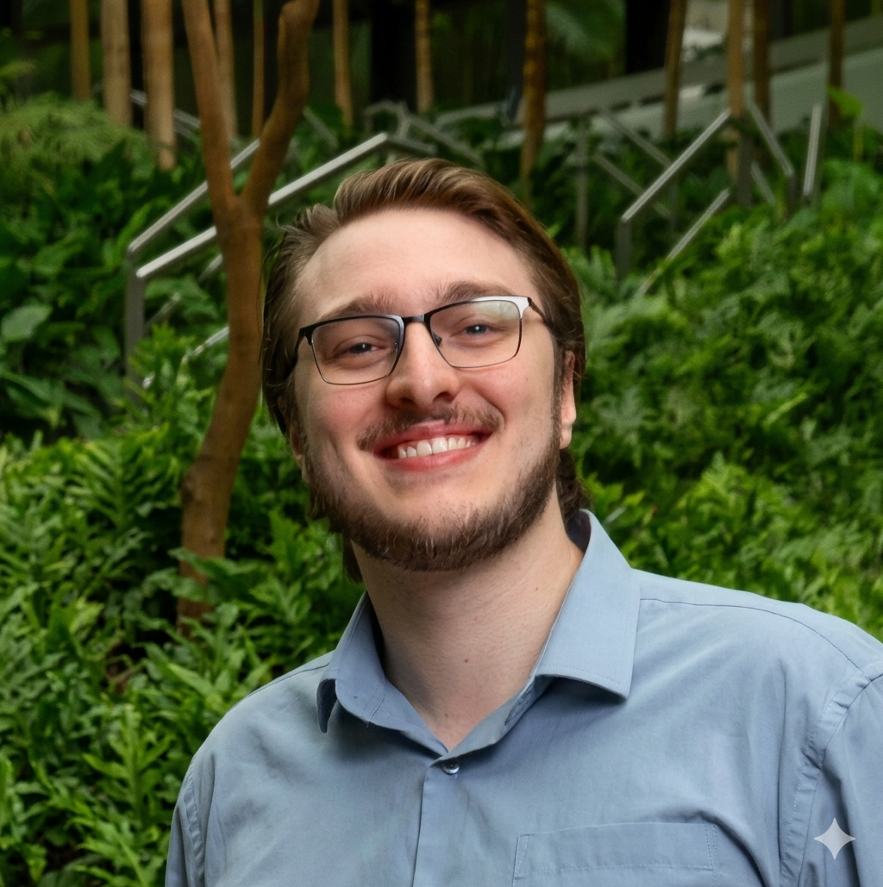

Atendimento online para pessoas que enfrentam estresse, ansiedade e esgotamento. Com base científica, sem julgamentos.

Como psicólogo clínico, utilizo minha sólida bagagem no ambiente corporativo para fundamentar e enriquecer a prática no consultório. Ter vivenciado de perto a rotina intensa, as relações de poder e as complexas engrenagens das organizações me proporciona uma compreensão profunda e realista sobre as dores do profissional moderno.
Hoje, dedico-me integralmente à clínica, oferecendo um espaço ético de escuta e acolhimento para auxiliar as pessoas a lidarem com o estresse, a ansiedade, o esgotamento e os impactos que as pressões cotidianas exercem sobre a saúde mental e a vida pessoal.
Para guiar esse processo, utilizo a Terapia Cognitivo-Comportamental (TCC) — uma abordagem científica, estruturada e focada no presente. Trabalhamos de forma colaborativa para mapear como seus pensamentos influenciam emoções e comportamentos, desenvolvendo ferramentas práticas e reais.
O atendimento é voltado para pessoas que enfrentam desafios emocionais no contexto da vida profissional e pessoal — e que muitas vezes cresceram aprendendo que pedir ajuda é fraqueza.
Trabalha demais, não consegue desligar e carrega tudo sozinho. A produtividade está alta, mas o custo interno também.
Pensamentos acelerados, dificuldade de concentração, sensação de que algo vai dar errado mesmo sem motivo claro.
Cresceu resolvendo tudo sozinho. Buscar apoio parece fraqueza — mas o peso está pesado demais para carregar só.
Os dias passam, as entregas acontecem, mas a sensação de esvaziamento persiste. Falta sentido e presença.
Mudança de emprego, relacionamento, cidade. Momentos de transição trazem uma crise de identidade silenciosa.
Não quer só desabafar. Quer entender o que está acontecendo e desenvolver ferramentas para mudar padrões.
Mande uma mensagem pelo WhatsApp descrevendo brevemente o que você está vivendo. Sem formulários.
A primeira sessão é um espaço para nos conhecermos e avaliar se faz sentido seguirmos juntos.
Atendimento online por vídeo, 50 minutos, de onde você estiver — casa, escritório, qualquer lugar.
Mapeamos padrões, desenvolvemos ferramentas práticas e monitoramos seu progresso ao longo do processo.
Cheguei achando que só precisava de uma válvula de escape. Fui entendendo que o problema era mais fundo — e o Paulo foi cirúrgico em me ajudar a ver isso sem me fazer sentir fraco por isso.
Nunca fui de falar sobre o que sinto. O Paulo cria um ambiente onde isso vira natural. E as ferramentas que ele passa funcionam de verdade no dia a dia, não só na sessão.
Passei por uma transição de carreira pesada e fui completamente sozinho por meses. Quando finalmente busquei ajuda com o Paulo, percebi o quanto já estava me custando carregar tudo isso.
Entre em contato pelo WhatsApp. Sem compromisso, sem formulários. Só uma conversa.
Agendar consulta